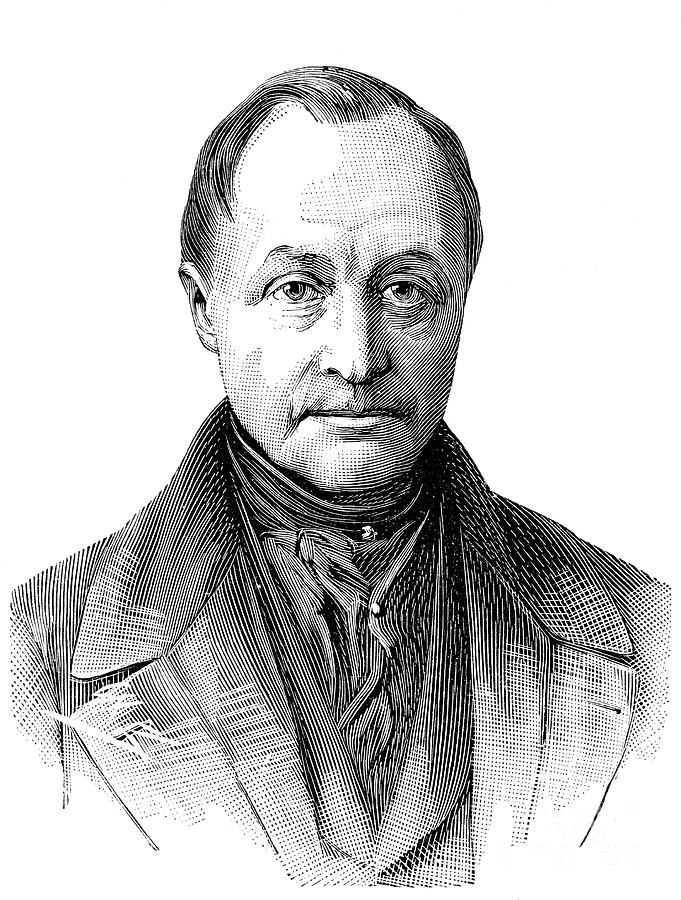
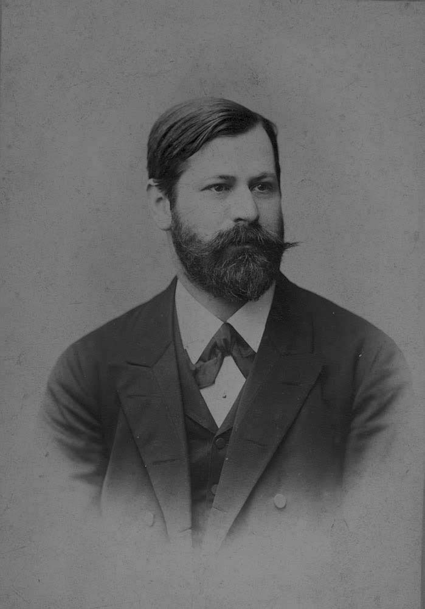

I-La science peut faire disparaître tous les discours non scientifiques
- La science permet de mettre tout le monde d’accord.
- La science n’arrêtant pas d’évoluer elle finira par répondre à tout.
- La science expliquera tout rendant les autres discours invalides.
- Les fondements scientifiques --> objectifs |#| discours non scientifiques --> subjectifs

Auguste Comte : 3 états :
- Théologique (tout phénomène a une cause surnaturelle. Ex : dieu)
- Métaphysique (tout phénomène s’explique par des causes abstraites. Ex : le destin)
- Positive (impossible d’expliquer tous les phénomènes, mais peut en déduire par l’observation et le raisonnement. Ex : la science).
II-La science ne peut pas faire disparaître tous les discours non scientifiques.
- Capacités humaines limitées -> Pas pouvoir accéder à la connaissance absolue. Seul un être omniscient/dieu peut y accéder.
- La religion permet de donner un certain sens à la vie que la science ne peut pas.
- Des vérités ne sont pas démontrable mais nécessaires.

Freud :
- Opposition religion et science.
- Pour savoir --> la science == la religion.
- Rassurer --> la religion > lascience.
- Pour les precepts, interdits --> religion >> science.